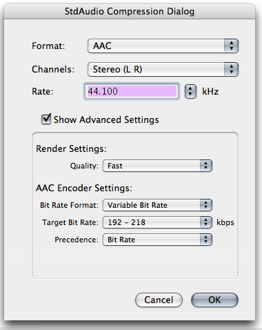

Q: I'd like to parse the kQTSCAudioPropertyID_CodecSpecificSettingsArray to provide codec UI, how is this done?A: Some audio codecs publish a CFDictionaryRef of various parameters specific to the configuration of the codec for example, the AAC codec. Additionally, every subconverter used by an Audio Converter can potentially have a CFDictionaryRef of settings. For example, when performing a sample rate conversion from PCM to PCM there will be a dictionary exposed by a Rate Converter subconverter. The AudioConverter used in such a conversion operation will conglomerate the various CFDictionaryRef's exposed by its subconverters in a CFArrayRef returned as the CodecSpecificSettingsArray property. This CodecSpecificSettingsArray property uses standard Core Foundation data types, therefore Core Foundation APIs such as CFArrayGetValueAtIndex and CFDictionaryGetValue are used (along with the appropriate keys listed below) to retrieve all the settings. IMPORTANT: The kQTSCAudioPropertyID_CodecSpecificSettingsArray property is also known as the kAudioCodecPropertySettings property when referenced from the Core Audio API. The keys for the settings property are defined in AudioCodec.h
//=============================================================================
// Constants for kAudioCodecPropertySettings
//=============================================================================
#define kAudioSettings_TopLevelKey "name"
#define kAudioSettings_Version "version"
#define kAudioSettings_Parameters "parameters"
#define kAudioSettings_SettingKey "key"
#define kAudioSettings_SettingName "name"
#define kAudioSettings_ValueType "value type"
#define kAudioSettings_AvailableValues "available values"
#define kAudioSettings_LimitedValues "limited values"
#define kAudioSettings_CurrentValue "current value"
#define kAudioSettings_Summary "summary"
#define kAudioSettings_Hint "hint"
#define kAudioSettings_Unit "unit" // kHz, kbps, etc.
// constants to be used with kAudioSettings_Hint
enum {
kAudioSettingsFlags_ExpertParameter = (1L << 0),
// If set, then the parameter is an expert parameter.
kAudioSettingsFlags_InvisibleParameter = (1L << 1),
// If set, then the parameter should not be displayed.
kAudioSettingsFlags_MetaParameter = (1L << 2),
// If set, then changing this parameter may affect the values of other parameters.
// If not set, then this parameter can be set without affecting the values of other parameters.
kAudioSettingsFlags_UserInterfaceParameter = (1L << 3)
// If set, then this is only a user interface element and not reflected in the codec's bit stream.
};
Figure 1: Typical example of AAC configured in StdAudio.  Figure 1 shows a typical configuration of the AAC codec using the Standard Audio Dialog, while Listing 1 demonstrates how to parse the CFArrayRef returned by calling QTGetComponentProperty on an instance of StdAudio and asking for the kQTSCAudioPropertyID_CodecSpecificSettingsArray property. The resulting output for the above codec configuration is shown in Listing 2. Listing 1: A function to parse the settings array and print out the results.
void DisplayCodecSpecificSettings(CFArrayRef inCodecSpecificSettings)
{
UInt32 i;
for (i = 0; i < CFArrayGetCount(inCodecSpecificSettings); i++) {
CFStringRef name = NULL;
CFArrayRef paramsArray = NULL;
CFIndex arrayIndex;
CFDictionaryRef curSettings =
(CFDictionaryRef)CFArrayGetValueAtIndex(inCodecSpecificSettings, i);
name = (CFStringRef)CFDictionaryGetValue(curSettings, CFSTR(kAudioSettings_TopLevelKey));
if (name) {
CFStringRef outStr = CFStringCreateWithFormat(kCFAllocatorDefault, NULL,
CFSTR("\nName - kAudioSettings_TopLevelKey (CFString): %@\n"), name);
CFShow(outStr);
CFRelease(outStr);
}
paramsArray = (CFArrayRef)CFDictionaryGetValue(curSettings, CFSTR(kAudioSettings_Parameters));
if (paramsArray) {
printf("Parameters - kAudioSettings_Parameters (CFArray):\n");
for (arrayIndex = 0; arrayIndex < CFArrayGetCount(paramsArray); arrayIndex++) {
CFStringRef settingsName = NULL, key = NULL, unit = NULL, summary = NULL;
CFNumberRef valueType = NULL, curValue = NULL;
CFArrayRef availableValues = NULL, limitedValues = NULL;
CFNumberRef hint = NULL;
CFDictionaryRef aDictionary = CFArrayGetValueAtIndex(paramsArray, arrayIndex);
printf("\n");
key = (CFStringRef)CFDictionaryGetValue(aDictionary, CFSTR(kAudioSettings_SettingKey));
if (key) {
CFStringRef outStr = CFStringCreateWithFormat(kCFAllocatorDefault, NULL,
CFSTR(" Settings Key - kAudioSettings_SettingKey: %@\n"), key);
CFShow(outStr);
CFRelease(outStr);
}
settingsName = (CFStringRef)CFDictionaryGetValue(aDictionary,
CFSTR(kAudioSettings_SettingName));
if (settingsName) {
CFStringRef outStr = CFStringCreateWithFormat(kCFAllocatorDefault, NULL,
CFSTR(" Settings Name - kAudioSettings_SettingName: %@\n"), settingsName);
CFShow(outStr);
CFRelease(outStr);
}
valueType = (CFNumberRef)CFDictionaryGetValue(aDictionary, CFSTR(kAudioSettings_ValueType));
if (valueType) {
SInt32 value;
CFStringRef outStr;
CFNumberGetValue(valueType, kCFNumberSInt32Type, &value);
outStr = CFStringCreateWithFormat(kCFAllocatorDefault, NULL,
CFSTR(" Value Type - kAudioSettings_ValueType (CFNumber): %d\n"), value);
CFShow(outStr);
CFRelease(outStr);
}
curValue = (CFNumberRef)CFDictionaryGetValue(aDictionary, CFSTR(kAudioSettings_CurrentValue));
if (curValue) {
SInt32 value;
CFStringRef outStr;
CFNumberGetValue(curValue, kCFNumberSInt32Type, &value);
outStr = CFStringCreateWithFormat(kCFAllocatorDefault, NULL,
CFSTR(" Current Value - kAudioSettings_CurrentValue (CFNumber): %d\n"), value);
CFShow(outStr);
CFRelease(outStr);
}
availableValues = (CFArrayRef)CFDictionaryGetValue(aDictionary,
CFSTR(kAudioSettings_AvailableValues));
if (availableValues) {
CFIndex availableValuesIndex;
printf(" Available Values - kAudioSettings_AvailableValues (CFArray):\n");
for (availableValuesIndex = 0; availableValuesIndex <
CFArrayGetCount(availableValues); availableValuesIndex++) {
CFStringRef availableValue = NULL;
availableValue = CFArrayGetValueAtIndex(availableValues, availableValuesIndex);
if (availableValue) {
CFStringRef outStr = CFStringCreateWithFormat(kCFAllocatorDefault, NULL,
CFSTR(" %d Value (CFString): %@\n"), availableValuesIndex, availableValue);
CFShow(outStr);
CFRelease(outStr);
}
}
}
// limitedValues is not a required parameter
limitedValues = (CFArrayRef)CFDictionaryGetValue(aDictionary,
CFSTR(kAudioSettings_LimitedValues));
if (limitedValues) {
CFIndex limitedValuesIndex;
printf(" Limited Values - kAudioSettings_LimitedValues (CFArray):\n");
for (limitedValuesIndex = 0; limitedValuesIndex <
CFArrayGetCount(limitedValues); limitedValuesIndex++) {
CFStringRef limitedValue = NULL;
limitedValue = CFArrayGetValueAtIndex(limitedValues, limitedValuesIndex);
if (limitedValue) {
CFStringRef outStr = CFStringCreateWithFormat(kCFAllocatorDefault, NULL,
CFSTR(" %d Value (CFString): %@\n"), limitedValuesIndex, limitedValue);
CFShow(outStr);
CFRelease(outStr);
}
}
}
// summary is not a required parameter - used for "Tool Tips"
summary = (CFStringRef)CFDictionaryGetValue(aDictionary, CFSTR(kAudioSettings_Summary));
if (summary) {
CFStringRef outStr = CFStringCreateWithFormat(kCFAllocatorDefault, NULL,
CFSTR(" Summary - kAudioSettings_Summary (CFString): %@\n"), summary);
CFShow(outStr);
CFRelease(outStr);
}
hint = (CFNumberRef)CFDictionaryGetValue(aDictionary, CFSTR(kAudioSettings_Hint));
if (hint) {
SInt32 value;
CFStringRef outStr;
CFNumberGetValue(hint, kCFNumberSInt32Type, &value);
outStr = CFStringCreateWithFormat(kCFAllocatorDefault, NULL,
CFSTR(" Hint Flag - kAudioSettings_Hint (CFNumber): %d\n"), value);
CFShow(outStr);
CFRelease(outStr);
}
// curUnit is not a required parameter
unit = (CFStringRef)CFDictionaryGetValue(aDictionary, CFSTR(kAudioSettings_Unit));
if (unit) {
CFStringRef outStr = CFStringCreateWithFormat(kCFAllocatorDefault, NULL,
CFSTR(" Units - kAudioSettings_Unit (CFString): %@\n"), unit);
CFShow(outStr);
CFRelease(outStr);
}
}
}
}
}
Listing 2: Output from calling DisplayCodecSpecificSettings with the configuration shown in Figure 1.
Name - kAudioSettings_TopLevelKey (CFString): AAC Encoder
Parameters - kAudioSettings_Parameters (CFArray):
Settings Key - kAudioSettings_SettingKey: Target Format
Settings Name - kAudioSettings_SettingName: Bit Rate Format
Value Type - kAudioSettings_ValueType (CFNumber): 10
Current Value - kAudioSettings_CurrentValue (CFNumber): 1
Available Values - kAudioSettings_AvailableValues (CFArray):
0 Value (CFString): Constant Bit Rate
1 Value (CFString): Variable Bit Rate
Summary - kAudioSettings_Summary (CFString): The bit rate format of the encoded AAC bitstream
Hint Flag - kAudioSettings_Hint (CFNumber): 5
Settings Key - kAudioSettings_SettingKey: Bit Rate
Settings Name - kAudioSettings_SettingName: Target Bit Rate
Value Type - kAudioSettings_ValueType (CFNumber): 10
Current Value - kAudioSettings_CurrentValue (CFNumber): 14
Available Values - kAudioSettings_AvailableValues (CFArray):
0 Value (CFString): 16
1 Value (CFString): 20
2 Value (CFString): 24
3 Value (CFString): 28
4 Value (CFString): 32
5 Value (CFString): 40
6 Value (CFString): 48
7 Value (CFString): 56
8 Value (CFString): 64
9 Value (CFString): 80
10 Value (CFString): 96 - 110
11 Value (CFString): 112
12 Value (CFString): 128 - 146
13 Value (CFString): 160 - 182
14 Value (CFString): 192 - 218
15 Value (CFString): 224
16 Value (CFString): 256 - 292
17 Value (CFString): 320
Limited Values - kAudioSettings_LimitedValues (CFArray):
0 Value (CFString): 96 - 110
1 Value (CFString): 128 - 146
2 Value (CFString): 160 - 182
3 Value (CFString): 192 - 218
4 Value (CFString): 256 - 292
Summary - kAudioSettings_Summary (CFString): The bit rate of the AAC produced by the encoder
Hint Flag - kAudioSettings_Hint (CFNumber): 4
Units - kAudioSettings_Unit (CFString): kbps
Settings Key - kAudioSettings_SettingKey: Sample Rate
Settings Name - kAudioSettings_SettingName: Sample Rate
Value Type - kAudioSettings_ValueType (CFNumber): 10
Current Value - kAudioSettings_CurrentValue (CFNumber): 8
Available Values - kAudioSettings_AvailableValues (CFArray):
0 Value (CFString): Recommended
1 Value (CFString): 8.000
2 Value (CFString): 11.025
3 Value (CFString): 12.000
4 Value (CFString): 16.000
5 Value (CFString): 22.050
6 Value (CFString): 24.000
7 Value (CFString): 32.000
8 Value (CFString): 44.100
9 Value (CFString): 48.000
Limited Values - kAudioSettings_LimitedValues (CFArray):
0 Value (CFString): Recommended
1 Value (CFString): 44.100
Summary - kAudioSettings_Summary (CFString): The sample rate of the AAC produced by the encoder
Hint Flag - kAudioSettings_Hint (CFNumber): 6
Units - kAudioSettings_Unit (CFString): kHz
Settings Key - kAudioSettings_SettingKey: Precedence
Settings Name - kAudioSettings_SettingName: Precedence
Value Type - kAudioSettings_ValueType (CFNumber): 10
Current Value - kAudioSettings_CurrentValue (CFNumber): 1
Available Values - kAudioSettings_AvailableValues (CFArray):
0 Value (CFString): None
1 Value (CFString): Bit Rate
2 Value (CFString): Sample Rate
Summary - kAudioSettings_Summary (CFString): If either the bit rate or sample rate is allowed to
override the other setting
Hint Flag - kAudioSettings_Hint (CFNumber): 13
Settings Key - kAudioSettings_SettingKey: Quality
Settings Name - kAudioSettings_SettingName: Quality
Value Type - kAudioSettings_ValueType (CFNumber): 10
Current Value - kAudioSettings_CurrentValue (CFNumber): 1
Available Values - kAudioSettings_AvailableValues (CFArray):
0 Value (CFString): Good
1 Value (CFString): Better
2 Value (CFString): Best
Summary - kAudioSettings_Summary (CFString): The quality of the encoded AAC bitstream
Hint Flag - kAudioSettings_Hint (CFNumber): 1
Settings Key - kAudioSettings_SettingKey: Channel Configuration
Settings Name - kAudioSettings_SettingName: Channel Configuration
Value Type - kAudioSettings_ValueType (CFNumber): 10
Current Value - kAudioSettings_CurrentValue (CFNumber): 1
Available Values - kAudioSettings_AvailableValues (CFArray):
0 Value (CFString): Mono
1 Value (CFString): Stereo
2 Value (CFString): Quadraphonic
3 Value (CFString): AAC 4.0
4 Value (CFString): AAC 5.0
5 Value (CFString): AAC 5.1
6 Value (CFString): AAC 6.0
7 Value (CFString): AAC 6.1
8 Value (CFString): AAC 7.0
9 Value (CFString): AAC 7.1
10 Value (CFString): AAC Octagonal
Limited Values - kAudioSettings_LimitedValues (CFArray):
0 Value (CFString): Stereo
Summary - kAudioSettings_Summary (CFString): The channel layout of the AAC produced by the encoder
Hint Flag - kAudioSettings_Hint (CFNumber): 5
Listing 3 shows the resulting output for a PCM to PCM sample rate conversion operation where a specific "codec" is not involved. Listing 3:
Name - kAudioSettings_TopLevelKey (CFString): Sample Rate Converter
Parameters - kAudioSettings_Parameters (CFArray):
Settings Key - kAudioSettings_SettingKey: Quality
Settings Name - kAudioSettings_SettingName: Quality
Value Type - kAudioSettings_ValueType (CFNumber): 10
Current Value - kAudioSettings_CurrentValue (CFNumber): 2
Available Values - kAudioSettings_AvailableValues (CFArray):
0 Value (CFString): Faster
1 Value (CFString): Fast
2 Value (CFString): Normal
3 Value (CFString): Better
4 Value (CFString): Best
Summary - kAudioSettings_Summary (CFString): Quality setting for the sample rate converter.
Hint Flag - kAudioSettings_Hint (CFNumber): 0
Settings Key - kAudioSettings_SettingKey: Priming Method
Settings Name - kAudioSettings_SettingName: Priming Method
Value Type - kAudioSettings_ValueType (CFNumber): 10
Current Value - kAudioSettings_CurrentValue (CFNumber): 1
Available Values - kAudioSettings_AvailableValues (CFArray):
0 Value (CFString): Pre
1 Value (CFString): Normal
2 Value (CFString): None
Summary - kAudioSettings_Summary (CFString): Priming method for the sample rate converter.
Hint Flag - kAudioSettings_Hint (CFNumber): 2
References:Technical Q&A QA1390, 'Standard Audio - The CodecSpecificSettingsArray and MagicCookie properties' Back to Top  Document Revision History| Date | Notes |
|---|
| 2006-11-30 | First Version |
Posted: 2006-11-30
|